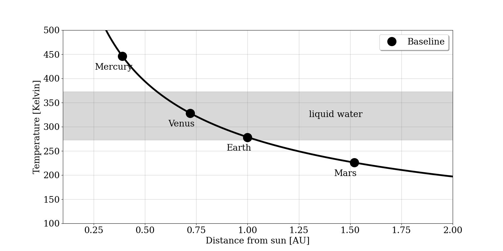
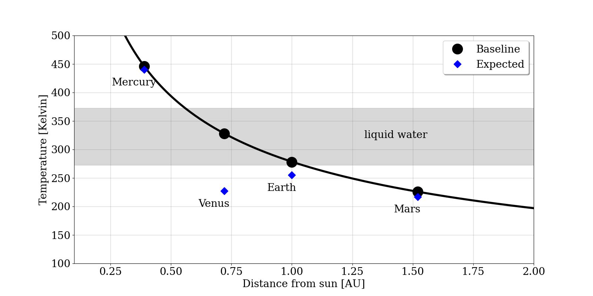
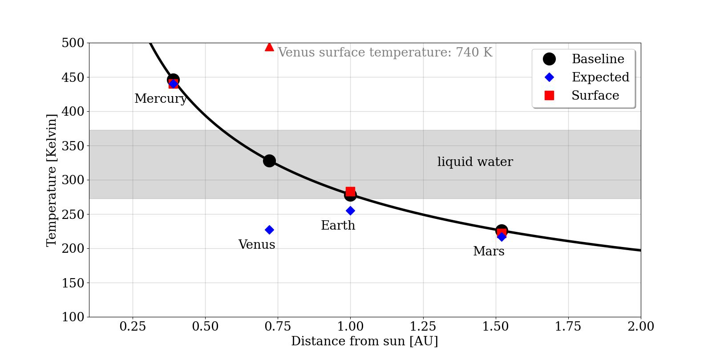

Materials for Determining planet surface temperatures
This page links to materials developed or refined as part of developing the review video + text for determining planet surface temperatures.
Planetary temperature plots
Python scripts for producting the following plots (code)
baseline temperature

expected temperature

surface temperature

Simulation (developed using Google Gemini)
Planet temperature simulator focusing on forward modeling of surface tempearture based on distance, albedo, and greenhouse effect (prompts). Currently just used to produce animations, requires refinement before it can be student-facing